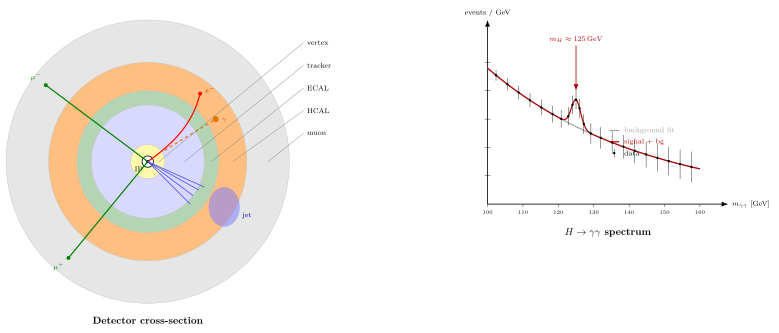

探测器 — ATLAS / CMS 怎么"看见"一个 Higgs?
上一节我们把质子加速到 $\sqrt s=13.6\,\mathrm{TeV}$, 对撞亮度 $\mathcal L\sim 2\times 10^{34}\,\mathrm{cm^{-2}s^{-1}}$. 但加速本身不直接给出物理结果 — 我们看不到夸克, 看不到 Higgs, 看不到几乎任何感兴趣的短寿命粒子. 我们能看到的只是:一些稳定带电粒子的电离径迹 ($e^\pm, \mu^\pm, \pi^\pm, K^\pm, p$), 一些中性粒子在量能器里沉积的能量簇 ($\gamma, n, K^0_L$), 一些穿透型粒子留下的后期径迹 ($\mu^\pm$ 穿过所有量能器). 几乎所有我们关心的粒子 — top, $W$, $Z$, Higgs, 任何 BSM — 寿命都在 $10^{-23}$ 到 $10^{-25}$ s, 产生于对撞点, 还没飞出一个原子核大小就已衰变. 我们做的全部事是: 探测衰变的末态, 反推产生时的粒子. 这整个反推过程叫"事件重建" (event reconstruction), 是实验粒子物理的核心手艺. 本节要讲的是这门手艺怎么做, 以及为什么 Higgs 这种分支比 $\mathcal O(10^{-3})$、截面 $\mathcal O(50)\,\mathrm{pb}$ 的稀有过程, 能在每秒 $4\times 10^7$ 次对撞的洪流里被可靠挑出.
一、洋葱: 五层探测器各负责什么
ATLAS 与 CMS 都是通用型 (general-purpose) 对撞探测器. 两者的直径都约 $15\,\mathrm{m}$, 长度 $25$—$45\,\mathrm{m}$, 重 $7000$—$14000\,\mathrm{t}$. 结构上都采用同心圆柱 (barrel) + 前后端盖 (endcap), 由内向外分成五层, 每一层对不同类型的粒子做不同的测量. 层的顺序不是任意排的 — 内层必须低物质量 (low material budget) 以免破坏测量, 外层必须厚以让能量完全沉积. 按照 "破坏最小的先做, 破坏最大的最后做" 的顺序.
第一层, 顶点探测器 (vertex detector). 紧贴束流管外壁, 半径 $\sim 3$—$10\,\mathrm{cm}$, 由四五层硅像素 (silicon pixel, $50\times 250\,\mu\mathrm{m}$ 单元) 组成. 任务: 记录带电粒子穿过时电离留下的精确位置, 空间分辨 $\sim 10\,\mu\mathrm{m}$. 有了这种精度才能把多个径迹外推回到对撞点 (primary vertex), 并且分辨出 $b$ 夸克衰变的二次顶点 (secondary vertex) — $b$ 强子寿命 $\tau\sim 1.5\,\mathrm{ps}$, 在 $\gamma\beta\sim 10$ 的实验能标下飞行 $c\tau\gamma\beta\approx 4.5\,\mathrm{mm}$, 正好是顶点探测器分辨能力的几百倍, 所以"$b$-tagging"成为一项基础能力. 对 Higgs 物理尤其关键, 因为 $H\to b\bar b$ 是最大分支比通道 ($BR\approx 58\%$).
第二层, 径迹探测器 (tracker). 半径 $10$—$110\,\mathrm{cm}$, 硅条 (silicon strip) 或硅像素补一部分, 共约十几层, 处在强磁场 ($B=2\,\mathrm{T}$ ATLAS, $B=3.8\,\mathrm{T}$ CMS) 中. 带电粒子在磁场里走圆弧, 由测得的曲率 $\rho$ 反推横向动量 $p_T=0.3\,B\,\rho$ (GeV/c, 单位 T 与 m). CMS 的 $3.8\,\mathrm{T}$ 超导螺线管是它相对于 ATLAS 最大的设计差异, 也是它名字 (Compact Muon Solenoid) 的来源 — 强磁场让外层可以更紧凑地测量 $\mu$ 子动量. 径迹探测器不吸收能量 (只测电离), 粒子穿过后继续前进.
第三层, 电磁量能器 (ECAL). 厚 $\sim 25\,X_0$ (辐射长度, 电子/光子完全簇射所需深度). CMS 用 $\mathrm{PbWO_4}$ (钨酸铅) 晶体, 共 $75848$ 块, 高发光率与快响应 ($\lt 25\,\mathrm{ns}$, 刚好匹配 LHC 的 $25\,\mathrm{ns}$ 束团间距). ATLAS 用液氩 (LAr) + 铅板的取样结构. 电子与光子进入量能器, 发生轫致辐射+对产生的级联簇射, 能量全部沉积, 分辨 $\sigma_E/E\approx 3\%/\sqrt E\oplus 0.5\%$ ($E$ in GeV). 强子几乎不在 ECAL 里停下, 继续往外.
第四层, 强子量能器 (HCAL). 厚 $\sim 10$ 个强子相互作用长度 $\lambda_I$, 铁或铜板 + 塑料闪烁体的取样结构. 强子 ($\pi, K, p, n$) 在这里通过强相互作用簇射, 能量沉积, 分辨 $\sigma_E/E\approx 50\%/\sqrt E\oplus 3\%$ — 比 ECAL 差一个量级, 因为强子簇射有中微子和 $\mu$ 的泄漏, 以及电磁-强子比例的涨落. ECAL + HCAL 合起来测量了除 $\mu$ 与 $\nu$ 以外所有粒子的能量, 这使得"缺失横能量" $E_T^{\mathrm{miss}}=-|\sum_i\vec p_{T,i}|$ 可以被当作中微子 (或任何不可见 BSM 粒子) 横动量的间接测量.
第五层, $\mu$ 子室 (muon chambers). 在量能器之外. $\mu$ 子能量损失只靠电离, 在 $10\,\mathrm{GeV}$ 以上穿过整个探测器几乎不衰减, 所以到达外层的带电粒子几乎肯定是 $\mu$. 漂移室 (drift tubes) 与阻性板室 (RPC) 提供空间+时间测量, 分辨 $\sigma(p_T)/p_T\sim 10\%$ at $1\,\mathrm{TeV}$. $\mu$ 子也是电子之外最"干净"的轻子探针, $H\to ZZ\to 4\mu$ 这条通道用的就是它.
层的顺序直接编码了粒子识别 (particle ID) 的逻辑: 一个带电粒子若只在径迹 + ECAL 停下 $\to$ 电子; 没有径迹却在 ECAL 停下 $\to$ 光子; 径迹 + ECAL + HCAL 全走 $\to$ 强子 (jet 里的 charged hadron); 径迹 + 穿过所有层到 $\mu$ 室 $\to$ $\mu$ 子; 没有径迹却在 HCAL 停下 $\to$ 中性强子. 这五种"物理对象"组合, 加上缺失横能量, 就是所有 LHC 分析的积木.
二、deepdive: $H\to\gamma\gamma$ 怎么从背景里被挑出来
上一条清单里有个例外值得单独讲: Higgs. 它的寿命只有 $\sim 10^{-22}\,\mathrm{s}$, 在探测器里根本走不出 $10^{-14}\,\mathrm{m}$, 我们只能看它的衰变末态. 产生截面在 $\sqrt s=13\,\mathrm{TeV}$ 下 $\sigma(pp\to H)\approx 50\,\mathrm{pb}$ (主要是 gluon-gluon fusion via top loop). 整个 Run 2 积分亮度 $140\,\mathrm{fb^{-1}}$, 所以 Higgs 产生总数约 $50\,\mathrm{pb}\times 140\,\mathrm{fb^{-1}}=50\times 10^{-12}\times 140\times 10^{15}=7\times 10^6$ 个. 但分支比小: $BR(H\to\gamma\gamma)\approx 2.3\times 10^{-3}$, 所以 $\gamma\gamma$ 末态约 $1.6\times 10^4$ 个. 看似很多, 相对于 LHC 总对撞数 $\sim 10^{15}$ 却是 $10^{-11}$ 量级.
问题在于本底 (background) — 同样给出两个光子的其它过程. 主要三类: (i) 非共振的 QCD 双光子过程 $q\bar q\to\gamma\gamma$ 与 $gg\to\gamma\gamma$ (通过夸克箱图), 截面在 $m_{\gamma\gamma}$ 附近约 $50\,\mathrm{pb/GeV}$; (ii) $\gamma$ + jet 过程里 jet 被错误识别为 photon (fake rate $\sim 10^{-4}$ per jet, 但 jet 产率是 photon 的 $10^3$ 倍, 所以最终贡献相当); (iii) dijet 里两个 jet 都 fake 成 photon, 贡献较小但非零. 加起来在 $m_{\gamma\gamma}\in[100,150]\,\mathrm{GeV}$ 窗口, 积分亮度 $140\,\mathrm{fb^{-1}}$ 给约 $B\sim 3\times 10^5$ 事件. 信号只有 $S\sim 1.6\times 10^4$. 看起来绝望: 信号淹没在二十倍的本底里.
但这里有个关键的几何: 本底 $m_{\gamma\gamma}$ 谱是平滑的, 符合 $B(m)=p_0+p_1 m+p_2 m^2$ 这类低阶多项式; 信号却是一个窄峰, 集中在 $m_H=125.1\,\mathrm{GeV}$, 宽度由 ECAL 能量分辨主导, Gaussian 形状, $\sigma_m\approx 1.3\,\mathrm{GeV}$ (源于 $\sigma_E/E\sim 1\%$ at $60\,\mathrm{GeV}$, 传播到 $m_{\gamma\gamma}=\sqrt{2E_1 E_2(1-\cos\theta_{12})}$ 上). 所以我们不是在整个 $[100,150]$ 窗口上做 $S/\sqrt B$, 而是在 $\pm 2\sigma_m\approx \pm 2.6\,\mathrm{GeV}$ 的窄窗上做. 窗内本底只剩 $$B_{\mathrm{win}}\;\approx\; B_{\mathrm{tot}}\cdot\frac{2\sigma_m}{50\,\mathrm{GeV}}\cdot\sqrt{\pi}\;\approx\; 3\times 10^5\cdot\frac{5.2}{50}\cdot 1.77\;\approx\; 5.5\times 10^4. \tag{1}$$ 信号损失很小 — 高斯峰内 $\pm 2\sigma$ 包含约 $95\%$, $S_{\mathrm{win}}\approx 0.95\times 1.6\times 10^4\approx 1.5\times 10^4$. 显著性 $$Z\;=\;\frac{S}{\sqrt{B}}\;\approx\;\frac{1.5\times 10^4}{\sqrt{5.5\times 10^4}}\;\approx\; 64. \tag{2}$$ 这个"显著性"的物理含义: 假如真实世界里没有 Higgs, 统计涨落也很难在这个窗上凑出 $64$ 倍标准差的过剩. 实际 ATLAS + CMS 合并 Run 1 + Run 2 数据, $H\to\gamma\gamma$ 单通道给出约 $10\sigma$ (估算用理想化背景得到 $64\sigma$, 真实分析里的系统误差、能量刻度、 fake 率、类别划分, 会把 $Z$ 压下来, 但仍然远超 $5\sigma$). 发现阈值是 $5\sigma$, Higgs 在 2012 用区区 $\sim 5\,\mathrm{fb^{-1}}$ 数据就达到了.
整套 fit 的数学形式是: $$\frac{\mathrm dN}{\mathrm dm}\;=\;\underbrace{p_0+p_1 m+p_2 m^2}_{\text{背景, 由侧带拟合}}\;+\;\underbrace{\frac{S}{\sqrt{2\pi}\sigma_m}\exp\!\Big[-\frac{(m-m_H)^2}{2\sigma_m^2}\Big]}_{\text{信号, Gaussian 峰}}.$$ 实际分析里信号形状用 Crystal Ball (带低侧尾巴的 Gaussian) 更准, 背景多项式阶数视统计量选 (一般 $\leq 4$ 阶), 但核心思路就是"平滑背景 + 窄峰". 为什么这样分? 因为 QCD 背景的横动量谱是标度不变的 ($\mathrm d\sigma/\mathrm d m\propto m^{-\alpha}$ 级), 在局部 $[100,150]$ 窗口内用低阶多项式逼近误差很小; 而 Higgs 作为质量本征态, 衰变是点状事件, 不变质量谱是 $\delta(m-m_H)$ 被仪器高斯化, 形状与位置都是理论与刻度的固定输入. 两条函数形式完全不同, 从数据里分开它们不需要事先知道本底的绝对大小 — 把窗外的 $m_{\gamma\gamma}\in[100,120]\cup[130,150]$ 的"侧带" (sidebands) 拟合背景多项式, 外推到信号窗内做背景预期, 多出来的就是信号. 这种方法对本底绝对正常化的系统误差极其不敏感, 是发现型分析的黄金结构.
那为什么一开始不用 $H\to b\bar b$ ($BR\approx 58\%$, 信号事件数多 250 倍)? 因为 $b\bar b$ 末态在 LHC 被巨大的 QCD $b\bar b$ 本底淹没, $S/B\sim 10^{-6}$, 峰不可辨. 为什么不用 $H\to ZZ\to 4\ell$ ($BR\approx 1.2\times 10^{-4}$, 信号事件数少 20 倍)? 因为它的本底几乎为零 ($ZZ$ 非共振产生 + 若干小贡献), 单通道能达到 $\sim 5\sigma$, 与 $\gamma\gamma$ 并列为发现通道. $\gamma\gamma$ 与 $4\ell$ 的共同特点是: 末态全是"干净"的轻子或光子, 能精确重建不变质量, 形成窄峰. "分支比 $\times$ 实验可达性"乘积最大的通道获胜, 不是 "分支比"最大的通道.
三、触发: 每秒 $4\times 10^7$ 事件怎么降到 $10^3$
LHC 束团以 $25\,\mathrm{ns}$ 间距相互对撞, 所以对撞频率 $40\,\mathrm{MHz}$. 每次对撞含多重质子-质子相互作用 (pileup, PU)—Run 3 名义 PU $\sim 50$—60, HL-LHC 升级后将到 PU $\sim 200$. 原始数据率 $40\,\mathrm{MHz}\times 1\,\mathrm{MB/\text{事件}}=40\,\mathrm{TB/s}$, 完全不可能写入存储 (磁带集群峰值带宽约 $10\,\mathrm{GB/s}$). 所以必须扔掉 $99.999\%$ 的事件, 只留下"有趣"的.
两级触发系统. L1 硬件触发 (ATLAS 叫 L1, CMS 类似) — 专用 FPGA 与 ASIC 芯片, 在 $\sim 3\,\mu\mathrm{s}$ 内做粗粒度决定. 输入只是量能器 (降分辨到 $\sim 0.1\times 0.1$ 的 $\eta$-$\phi$ 塔) + $\mu$ 子室 (粗粒度). 判据: 是否有高 $p_T$ 的电磁簇射 ($E_T\gt 22\,\mathrm{GeV}$)、高 $p_T$ $\mu$ 子 ($p_T\gt 20\,\mathrm{GeV}$)、大 $E_T^{\mathrm{miss}}$ 等. 通过 L1 的事件率从 $40\,\mathrm{MHz}$ 降到 $100\,\mathrm{kHz}$, 压缩因子 $400$. HLT 软件触发 (High Level Trigger) — 大型 CPU 农场 (数万核), 接收 L1 通过的事件的完整信息, 做近似离线重建的"快速版"(电子 ID、$\mu$ 径迹、 jet 聚类), 用几百到几千个具体"trigger path"逐一判断. HLT 耗时 $\sim 200\,\mathrm{ms}$, 输出率 $\sim 1\,\mathrm{kHz}$, 写入磁带. 总压缩因子 $40\,\mathrm{MHz}/1\,\mathrm{kHz}=4\times 10^4$.
对 $H\to\gamma\gamma$, 用的触发是 "双光子", 阈值两个 $E_T\gt 25$—$35\,\mathrm{GeV}$ 的 ECAL 簇. 双光子触发率在 Run 2 的典型运行条件下约 $50\,\mathrm{Hz}$, 整个 Run 2 积分下约 $10^9$ 事件, 绝大多数是 QCD $\gamma\gamma$ + fake. 真实 Higgs $\to\gamma\gamma$ 约 $1.6\times 10^4$ 个 (分支比估算), 信噪比约 $10^{-5}$ — 但靠窄峰 fit, 照样挑得出. 触发的要求是"别漏掉", 不是"别挑错" — 漏掉的事件永远找不回, 挑错的多挑出来的可以后面再做离线分析剔除.
触发系统的一个极限: pileup. 每个束团碰撞同时发生 $\mu$ 个硬 pp 相互作用 (按 Poisson 分布), 其中只有一个是"我们真正关心"的, 剩下的是 MB (minimum-bias) 软强子散射, 贡献几百条低 $p_T$ 径迹、若干低能簇、不相关顶点. PU 主顶点重建可以靠顶点探测器分辨 $\sigma_z\sim 100\,\mu\mathrm{m}$ 与 PU 顶点的平均间距 $\sim 5\,\mathrm{mm}$ 分开, 没问题. 真正的痛点在量能器 — photon 的 $m_{\gamma\gamma}$ 需要精确顶点来计算角度, PU 里挑错顶点会让 $m_{\gamma\gamma}$ 偏离几个 GeV, 把峰抹平. CMS 为此用"$p_T$ 最大的 sum" 选主顶点, 加上 $\gamma$ 簇本身在 ECAL 里的 $z$ 信息 (通过晶体指向对准), 在 PU $=50$ 下信号分辨保持 $\sigma_m\approx 1.3\,\mathrm{GeV}$. 当 PU $\gt 100$ 时顶点混淆率上升, ECAL 里孤立性 (isolation) 切割失效 (PU 带来大量低能尘埃, 假装把信号 $\gamma$ 周围也变脏), fake rate 上升, $S/\sqrt B$ 下降. 这是 HL-LHC 升级要解决的主要问题之一, 也是"precision timing"探测器 (时间分辨 $\sim 30\,\mathrm{ps}$) 在 Phase II 里被加入的原因 — 用时间维度进一步分离 PU 顶点.

四、事件重建、数字代入与历史
从原始电子信号到物理对象之间, 还有一整条"事件重建"流水线. 简化成四步:
- 径迹拟合 — 顶点 + 径迹探测器里的 hit 串起来, 用 Kalman 滤波器从外向内逐层拟合, 得到每条径迹的 $p_T$、方向、电荷. 效率 $\sim 99\%$ (带电粒子 $p_T\gt 1\,\mathrm{GeV}$), 动量分辨 $\sigma(p_T)/p_T\sim 1\%$ at $100\,\mathrm{GeV}$.
- 顶点重建 — 把径迹按起点位置聚类, 找到主顶点 (PV) 与次级顶点 (SV). PU $=50$ 下, 通常 $30$—$50$ 个 PV, 但"真正有趣"的那个 (最大 $\sum p_T^2$) 挑出来.
- 量能器簇 — ECAL 与 HCAL 里邻近高能晶格聚类, 用"粒子流" (particle flow) 算法把径迹与簇匹配, 避免重复计数. CMS 的 particle flow 是它的招牌算法, 把 jet 能量分辨提高 $30\%$.
- 粒子识别与物理对象 — 按上一节的逻辑, 把径迹+簇+$\mu$ 室的组合标注成 $e/\mu/\gamma/\tau/jet$, 加上 $E_T^{\mathrm{miss}}$. 这些对象是后续分析的输入.
"看见 Higgs"在这个流水线里的真实含义: 每年累积 $\sim 10^{10}$ 事件 (HLT 通过), 每个事件 $\sim$ 几百个物理对象, 写成 $\sim 1\,\mathrm{MB}$ 的 AOD/MiniAOD/NanoAOD 格式, 存到 WLCG (全球网格). 某个博士生在上面跑选择算法 (两个 $E_T\gt 25\,\mathrm{GeV}$ 的孤立 photon, 双光子系统 $p_T\gt 40\,\mathrm{GeV}$, 等等), 留下 $\sim 10^5$ 候选事件. 在这些事件上画 $m_{\gamma\gamma}$ 直方图, 看 $125\,\mathrm{GeV}$ 处是否有峰, 按 (1)-(2) 做显著性评估. 2012-07-04, ATLAS 与 CMS 分别在同一会议上报告 $\sim 5\sigma$ 过剩, $H\to\gamma\gamma$ 与 $H\to ZZ\to 4\ell$ 两条通道联合. Higgs 粒子发现. 2013 年诺贝尔物理学奖颁给 Peter Higgs 与 François Englert (Brout 于 2011 年已故, 未获奖).
数字的再检验. 上面 (2) 里 $Z\approx 64$ 的估算是理想化的 — 实际 ATLAS 2018 年的 $H\to\gamma\gamma$ 分析 ($139\,\mathrm{fb^{-1}}$) 给出整个分析的显著性约 $6.5\sigma$ (统计 + 系统), 单通道 vs 期望的 $S/\sqrt B$ 差一个量级. 差在哪? 系统误差包括: ECAL 能量刻度 (约 $0.3\%$)、 photon 识别效率 ($\sim 1\%$)、 PU 依赖 ($\sim 2\%$)、 理论预测不确定性 (产生截面 $\sim 10\%$). 这些都会把"数数"型的 $S/\sqrt B$ 向下修正. 但核心逻辑 —窄峰 + 平滑背景 + 侧带外推 — 不变. 这也是为什么实验里"在精度时代"重要的不是再发现一个粒子, 而是把 Higgs 耦合精度从 $\sim 10\%$ 推到 $\sim 1\%$, 以此检验 BSM 偏离.
历史. ATLAS 与 CMS 的设计起于 1990 年代初期 (SSC 取消, 欧洲 LHC 在 CERN 立项后). 两组 LOI (Letter of Intent) 1992 年提交, TDR 1997 年完成, 安装始于 2003 年. 2008-09-10 LHC 首次对撞 (未完全能量, 九天后由于磁体事故停机一年), 2009 重启, 2010 年 $\sqrt s=7\,\mathrm{TeV}$ 首次物理数据. 两组方案在磁体上分道: ATLAS 用空心环形磁体 ($B\sim 0.5$—$1\,\mathrm{T}$) + 内部螺线管 ($2\,\mathrm{T}$), 几何更大; CMS 用单一超导螺线管 ($3.8\,\mathrm{T}$), 紧凑但重. 两种方案同时存在的理由: 独立交叉验证. Higgs 发现当天, 两个合作组不被允许事先比对结果, 只有在公开报告后才能知道对方看到了什么 — 两个 $5\sigma$ 在 $125\,\mathrm{GeV}$ 同时出现, 这种独立验证是粒子物理发现的金标准. Peter Higgs 本人出席了那天在 CERN 的会议, $83$ 岁, 听到 Fabiola Gianotti (ATLAS 发言人) 与 Joe Incandela (CMS 发言人) 报告时落泪. 次年 10 月诺贝尔奖宣布.
小结
"看见 Higgs" 其实是一整条工程 + 统计链: 洋葱式五层探测器 (顶点/径迹/ECAL/HCAL/$\mu$) 记录每个粒子在最合适的层留下的信号; 两级触发 (L1 硬件 $40\,\mathrm{MHz}\to 100\,\mathrm{kHz}$, HLT 软件 $\to 1\,\mathrm{kHz}$) 从 $40\,\mathrm{TB/s}$ 的原始洪流里挑出可写入的 $\mathcal O(1\,\mathrm{GB/s})$; 事件重建把原始 hit 翻成 $e/\mu/\gamma/jet$ 等物理对象; 最后在 $m_{\gamma\gamma}$ 谱上用 "平滑多项式背景 + 窄高斯信号" 的 fit, 按 $Z=S/\sqrt B$ 评估显著性. $H\to\gamma\gamma$ 虽分支比只有 $2\times 10^{-3}$, 却因为窄峰 + 低本底在发现阶段胜出, 2012-07-04 与 $H\to ZZ\to 4\ell$ 联合给出 $5\sigma$. 这整套方法论不是 Higgs 独有 — 下一节讲截面与亮度时, 我们会看到同一个 $S=\sigma\cdot\mathcal L$ 的骨架如何通用地把粒子物理实验的"事件数"变回可比对的物理量, 以及为什么 "$5\sigma$ 发现阈值" 作为一个统计约定, 有它的选择性偏差与历史根源.
▲